这里学习一篇 UCSD + Snap 的文章《Expressiveness Limits of Autoregressive Semantic ID Generation in Generative Recommendation》，作者提出 Latte，核心不是再设计一个更复杂的 tokenizer，而是指出：生成式推荐里 “自回归生成 Semantic ID” 这件事本身会带来表达能力上限。因为 SID 是一串离散 token，模型逐 token 解码时等价于在一棵树上从根走到叶子，树上距离近的物品会共享大量前缀概率项，最终导致它们在不同用户上的生成概率高度相关，难以表达个性化排序翻转和非传递的物品相似关系。
论文地址：https://arxiv.org/pdf/2605.06331
代码地址：https://github.com/hyp1231/Latte
1. 背景
生成式推荐（Generative Recommendation, GR）的基本做法是：先把每个 item 转成一串离散 token，也就是 Semantic ID（SID），然后让模型像生成文本一样，自回归地生成目标 item 的 SID。
如果一个物品 $i_t$ 的 SID 是
那么给定用户历史 $u$，模型对这个物品的打分通常写成：
这和传统推荐的 “用户向量与物品向量点积/相似度打分” 很不一样。传统推荐里，两个物品是否相似更多由用户行为矩阵决定；但 GR 里，一个物品概率是由一串 token 的条件概率乘出来的。如果两个物品共享 SID 前缀，它们的概率计算里就会共享前几项乘法因子。
过去很多工作主要关注 “怎么构造更好的 SID”：比如 TIGER、LETTER、ActionPiece、PSID、MTGRec 等都在 tokenizer 或 item semantic indexing 上做文章。但这篇论文的问题意识更底层：即便 SID 构得很好，自回归解码过程本身是否会限制模型表达能力？
作者的答案是：会。
2. 核心问题：SID 解码树会强行耦合物品概率
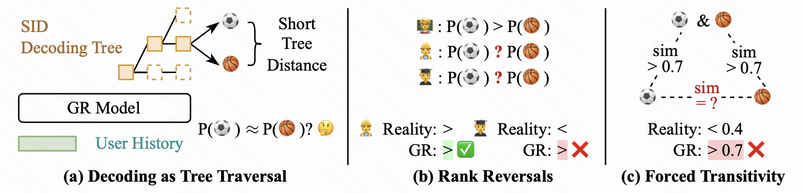
这张图是全文最关键的直觉图，可以分成三块看。
左侧：Decoding as Tree Traversal
在生成式推荐里，生成一个 SID 可以看作在一棵树上走路径。根节点表示空前缀，第一层是第一个 token，第二层是前两个 token 的组合，直到叶子节点对应具体 item。
如果两个 item 的 SID 前几位一样，那么它们在这棵树上共享很长的路径，叶子之间的树距离就短。比如足球和篮球如果前两个 SID token 都一样，只在最后一个 token 不同，那么模型计算它们概率时，前两个条件概率项完全相同。于是问题来了：模型对它们的最终概率很容易一起变大或一起变小。
作者把这种距离定义为：
其中 $m$ 是 SID 长度，$k$ 是两个 SID 的最长公共前缀长度。如果两个 item 只在最后一位不同，那么 $k=m-1$，树距离就是 $2$，说明二者在树上非常近。
中间：Rank Reversals
个性化推荐必须允许 “排序翻转”。例如用户 A 可能更喜欢足球，用户 B 可能更喜欢篮球，所以对同一对 item，模型应该能输出：
同时也能输出：
但如果足球和篮球在 SID 树上距离很近，它们的生成概率高度相关，那么模型很容易对不同用户都给出同一个相对顺序。图里第一个用户的排序符合真实偏好，第二个用户真实情况应该反过来，但 GR 仍然输出了同样方向的排序，这就是 “rank reversal 表达困难”。
右侧：Forced Transitivity
第三块讲的是物品相似关系的非传递性。现实中可能出现：
- 足球与 “足球+篮球混合兴趣” 很像；
- 篮球与 “足球+篮球混合兴趣” 也很像；
- 但足球和篮球本身并不一定很像。
传统协同过滤可以表达这种 “桥接型相似”：中间 item 同时被两类用户喜欢，但两端 item 的用户群并不重合。然而树结构有强烈的超度量性质，如果 $i_1$ 和 $i_2$ 很近，$i_2$ 和 $i_3$ 很近，那么 $i_1$ 和 $i_3$ 往往也会被强行拉近。于是模型可能把真实相似度低于 0.4 的两个物品也预测成大于 0.7。
这张图本质上说明：SID 树结构不只是一个索引结构，它会直接变成模型概率分布的约束。
3. 树距离与生成概率相关性的实证验证
作者先用 TIGER 作为典型 GR 模型，用 SASRec 作为 item ID-based 序列推荐模型，对比 “树距离” 和 “物品生成概率相关性” 的关系。
实验方式是：
- 在不同树距离 $\{2,4,6,8\}$ 下均匀采样 1024 对 item；
- 对每一对 item，随机采样 512 个用户；
- 分别计算 $P(i\mid u)$ 和 $P(i'\mid u)$；
- 用这些用户上的概率序列计算 Pearson 相关系数。
如果两个 item 的生成概率在不同用户上高度同步变化，Pearson 相关系数就接近 1。
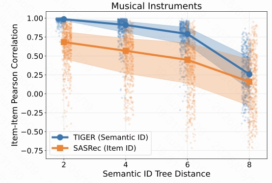
Musical Instruments 数据集上，TIGER 的蓝线在 tree distance = 2 时几乎贴近 1，说明只要两个 item 在 SID 树上非常近，它们对所有用户的生成概率几乎一起变化。距离变大后相关性下降，但在距离 4 和 6 时仍然很高。
相比之下，SASRec 的橙线整体更低、离散更大。因为 SASRec 不靠共享 SID 前缀生成 item，它的 item 概率不被固定树结构强行绑定。
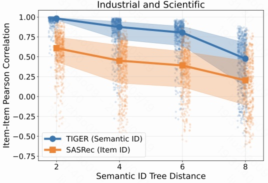
Industrial and Scientific 数据集也有同样趋势：TIGER 在 tree distance = 2 时接近 1，tree distance = 4 和 6 仍然明显高于 SASRec。这个现象说明问题不是某个品类的偶然结果，而是自回归 SID 生成在多个数据集上都存在的结构性现象。
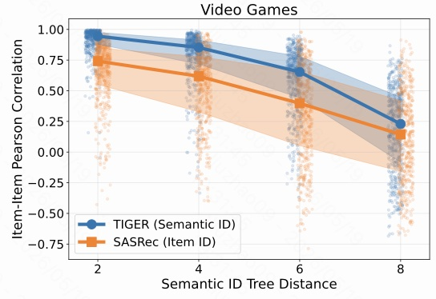
Video Games 数据集仍然一致。这里尤其好理解：同一个游戏系列、同一平台或同一类型的游戏，很可能 SID 前缀相似，但用户偏好仍可能差异很大。比如论文附录里提到，用户可能在 “Pokemon Scarlet” 和 “Pokemon Sun” 之间有不同年代、平台、玩法偏好。语义相似不代表所有用户上的生成概率都应该强相关。
这三张图共同证明了一个关键事实：
在 GR 中，item 生成概率的相似性会被 SID 解码树距离强烈影响；树上距离越近，概率相关性越强。
这也是后面理论分析的基础。
4. 理论限制
4.1 Rank Reversal 被高相关性压制
设两个 item 的生成概率是随机变量：
二者在用户群体上的 Pearson 相关系数是：
如果两个 item 在树上很近，经验上 $\rho(i,i')$ 会很高。作者定义 rank reversal 事件 $R(i,i')$ 为：两个独立用户对这两个 item 的相对排序相反。
也就是存在：
但另一个用户满足：
这正是个性化推荐需要表达的能力。
作者证明了如下上界：
其中：
- $\sigma^2$ 是两个 item 生成概率在用户群体上的方差；
- $\mu=|\mathbb{E}[P(i\mid u)-P(i'\mid u)]|$ 是两个 item 的平均概率差；
- $\rho(i,i')$ 是二者生成概率的相关系数。
这个公式的含义非常直接：当 $\rho(i,i')\to 1$ 时，分子里的 $1-\rho$ 接近 0，于是 rank reversal 概率的上界也接近 0。
换句话说，如果两个 item 在 SID 树上太近，模型会倾向于让它们在所有用户上保持同一个相对顺序。这样就很难表达 “A 用户喜欢 item 1，B 用户喜欢 item 2” 这种最基础的个性化差异。
4.2 Item-Item Similarity 被迫传递
作者还从协同过滤视角分析 item-item similarity。把每个 item 看成一个跨用户的概率向量：
两个 item 的 Pearson 相关可以理解为标准化后的偏好向量内积。相关性高，说明它们在不同用户上的偏好模式相似。
但 SID 解码树的距离满足一种超度量不等式：
这意味着：如果 $i_1$ 和 $i_2$ 很近，$i_2$ 和 $i_3$ 很近，那么 $i_1$ 和 $i_3$ 也会被树结构限制在较近位置。再结合 “树距离近会导致概率相关性高”，模型就被迫学出某种传递性：
但真实推荐场景里，物品相似常常不是传递的。一个中间物品可能同时被两类用户喜欢，但两端物品服务的是完全不同人群。GR 的固定树结构会让这种关系表达变困难。
5. Latte 方法
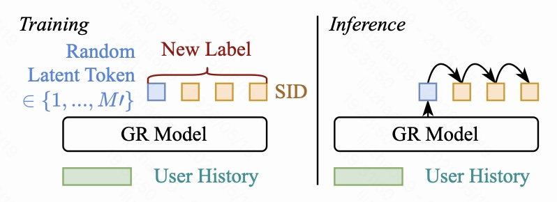
Latte 的改法很简单：在生成原本的 Semantic ID 之前，先生成一个 latent token。
假设原本目标 SID 是：
Latte 定义一个很小的 latent token 词表：
其中 $M'$ 远小于普通 SID token 词表大小。
5.1 训练阶段
训练时，对每一个目标 item，随机均匀采样一个 latent token $\ell\in L$，然后把训练目标改成：
也就是说，模型不再直接生成 SID，而是先学会生成一个额外的 latent token，再生成后面的 SID token。损失仍然是标准 next-token prediction，没有引入复杂额外目标。
图左侧的 “Random Latent Token” 表示训练时随机抽取 latent token；“New Label” 表示新的监督序列就是 latent token + 原 SID。
5.2 推理阶段
推理时，模型自己生成 latent token，然后继续生成 SID。对一个 item 的最终得分可以写成：
其中 $\text{Agg}$ 可以是 sum，也可以是 max。实际推理中，作者沿用生成式推荐常见做法，用 beam search 近似这个聚合过程。
5.3 为什么 latent token 能缓解表达力问题
标准 GR 只有一棵固定 SID 解码树。两个 item 的树距离是固定的，如果它们共享长前缀，就会一直被绑定。
Latte 相当于把一棵树变成多棵 latent-token-conditioned trees。不同 latent token 对应不同路径入口。对于同一对 item，如果它们在某个用户下走的是不同 latent token，那么它们会在第二层就分叉，实际共享的概率前缀大幅减少。
作者定义了一个用户相关的有效距离：
其中 $\ell^*(i,u)$ 表示对用户 $u$ 生成 item $i$ 时占主导的 latent token。
如果两个 item 选择不同 latent token，它们的有效距离直接变成最大距离 $2(m+1)$。这会降低二者概率相关性，从而放松 rank reversal 的限制。
论文附录还给出一个近似解释：
其中 $\rho_{\text{low}}<\rho$。只要 $M'>1$，Latte 的有效相关性就会低于原模型。这就是它能提升表达力的核心。
6. 实验设置与主结果
作者在 Amazon Reviews 2023 的三个品类上做实验：
- Musical Instruments，57,439 个用户，24,587 个物品；
- Industrial and Scientific，50,985 个用户，25,848 个物品；
- Video Games，94,762 个用户，25,612 个物品。
数据划分采用序列推荐常见的 leave-one-out：最近一次交互测试，倒数第二次验证，其余训练。
Latte 基于 PSID 实现，主实验使用 RQ-KMeans tokenization，SID 长度 $m=3$，每个位置词表大小 $M=256$。Latte 只是在 PSID 的目标序列前增加一个 latent token，其他主体架构仍是 T5-style encoder-decoder。
主结果中，Latte 在三个数据集、R@5/R@10/N@5/N@10 全部超过 PSID 和其他 baseline。尤其 NDCG@10 相对最好 baseline 的提升为：
- Instruments：+1.85%;
- Scientific：+5.51%;
- Games：+3.00%;
- 平均 NDCG@10 相对提升约 +3.45%。
这个提升幅度不夸张，但很有意义，因为 Latte 的改动非常小，而且它解决的是解码结构的表达力问题。
7. In-Depth Analysis
7.1 不同 Tokenization 方法下是否都有效
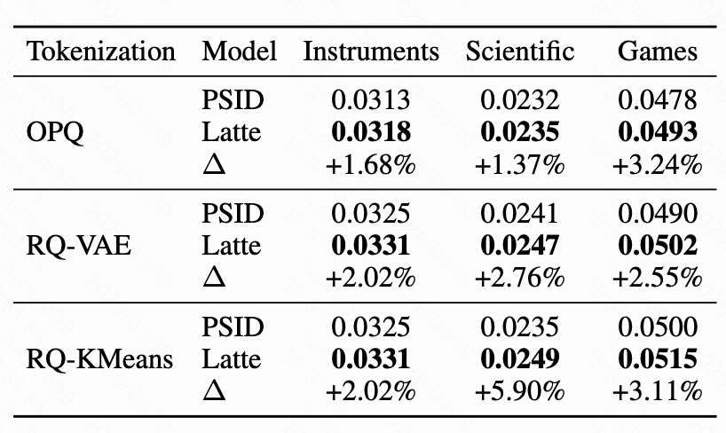
这张表比较了 OPQ、RQ-VAE、RQ-KMeans 三种 tokenizer 下，PSID 与 Latte 的 NDCG@10。
可以看到 Latte 在所有 tokenizer 和所有数据集上都提升：
- OPQ：三个数据集分别提升 +1.68%、+1.37%、+3.24%；
- RQ-VAE：分别提升 +2.02%、+2.76%、+2.55%；
- RQ-KMeans：分别提升 +2.02%、+5.90%、+3.11%。
这说明 Latte 的收益不是绑定某一种 SID 构造方式的。只要模型采用自回归 SID 生成，就可能受到树结构耦合影响；Latte 通过增加 latent path 的方式，可以普遍缓解这个问题。
一个细节是：PSID base 在某些场景下 RQ-VAE 更强，但加入 Latte 后 RQ-KMeans 表现反而最好。作者猜测，RQ-KMeans 这种没有被端到端强优化的 tokenizer 可能保留了更大的优化空间，所以 latent token 可以带来更明显补偿。
7.2 推理时用 sum 还是 max 聚合
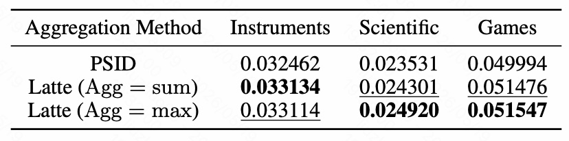
Latte 在推理阶段需要把不同 latent token 路径下生成同一 item 的分数聚合起来。这里比较了两种方式：
- $\text{Agg}=\text{sum}$：把多个 latent path 的概率加起来；
- $\text{Agg}=\text{max}$：取最强 latent path 的概率。
表里可以看到，两种聚合方式都超过 PSID：
- Instruments 上 sum 略高；
- Scientific 和 Games 上 max 略高；
- 两者差距很小。
这说明 Latte 的收益主要来自 “多 latent path 改变解码结构”，不是依赖某个非常脆弱的聚合技巧。实践中可以在验证集上选择 sum 或 max。
7.3 Latent Token 数量的影响
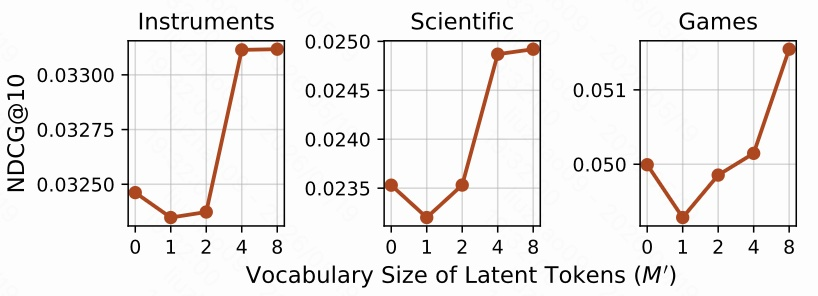
横轴是 latent token 词表大小 $M'$，其中 $0$ 表示原始 PSID，不加 latent token。
图里有一个很有意思的现象：$M'=1$ 或 $M'=2$ 时，性能有时会下降；当 $M'=4$ 或 $M'=8$ 时，性能明显超过 base。
原因可以这样理解：
- 如果 latent token 太少，它只是额外增加了解码步骤，却没有提供足够多的路径分叉；
- 额外生成 latent token 本身还会引入预测误差；
- 当 latent token 数量适中时，模型才真正获得多棵条件解码树，可以降低不同 item 的结构耦合。
所以 Latte 不是 “随便加一个 token 就好”，而是需要足够的 latent path 容量。作者在主实验中对 $M'\in\{2,4,8\}$ 调参，最终 Instruments 使用 4，Scientific 和 Games 使用 8。
7.4 Latte 是否真的降低了树结构约束
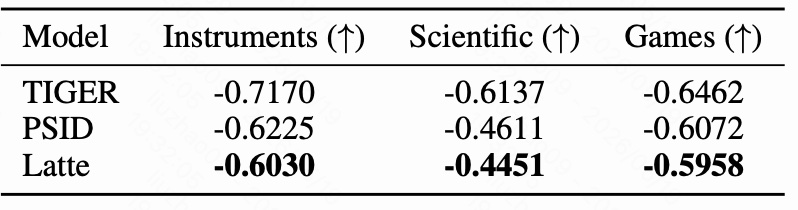
这张表使用 Kendall's rank correlation 衡量 “树距离” 与 “item-item probability similarity” 的单调关联强度。
注意这里数值越接近 0 越好。因为如果相关性绝对值很大，说明 item 相似度几乎被树距离支配；越接近 0，说明模型越能学出不完全受树结构约束的 item 关系。
结果是：
- Instruments：PSID 为 -0.6225，Latte 为 -0.6030；
- Scientific：PSID 为 -0.4611，Latte 为 -0.4451；
- Games：PSID 为 -0.6072，Latte 为 -0.5958。
Latte 在三个数据集上都让绝对相关性变小。幅度不是特别大，但方向一致，而且它使用的是与 PSID 完全相同的 semantic IDs。这一点很关键：Latte 不是靠换 SID，而是在同一套 SID 上改变解码结构，从而减弱树距离对概率相似度的支配。
7.5 Latent Token 绑定归纳偏置：动态模态顺序
前面的 Latte 是随机 latent token，没有显式语义。作者还做了一个扩展实验：如果 SID 的每个 token 对应不同模态，那么 latent token 可以绑定到不同的模态排列顺序。
例如音乐推荐里有三种模态：
- playlist 协同信息；
- tag 标签信息；
- metadata 文本元信息。
三种模态共有 $3!=6$ 种排列。作者让每个 latent token 对应一种排列。训练时仍然随机采样 latent token，但采到哪个 latent token，就按对应顺序排列 SID；推理时模型自己生成 latent token，也就等价于自己选择模态顺序。
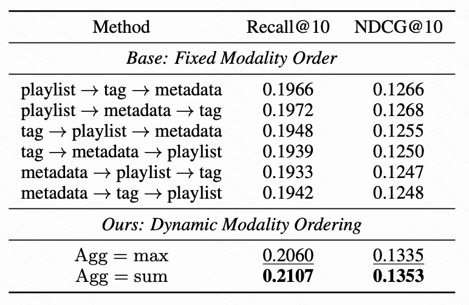
这张表先列出 6 种固定模态顺序的 baseline，再列出动态模态顺序的 Latte 结果。
固定顺序里最好的大概是：
NDCG@10 为 0.1268。
但动态模态顺序明显更强：
- Agg = max：Recall@10 = 0.2060，NDCG@10 = 0.1335；
- Agg = sum：Recall@10 = 0.2107，NDCG@10 = 0.1353。
这说明 latent token 不只可以作为 “无语义的额外路径”，也可以承载明确归纳偏置：让模型在不同用户或不同生成路径下选择更合适的模态组织方式。
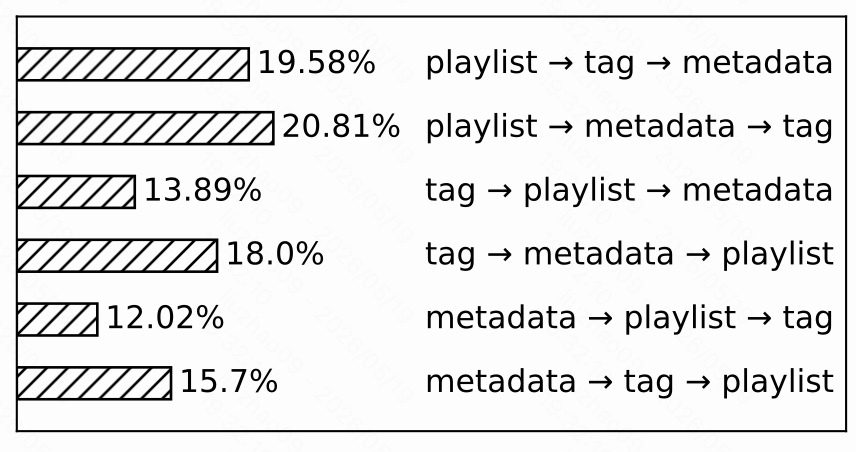
这张图展示模型最终选择不同模态顺序的比例。分布不是均匀的：
- playlist → metadata → tag 占 20.81%；
- playlist → tag → metadata 占 19.58%；
- tag → metadata → playlist 占 18.0%；
- 其他顺序占比更低。
最频繁的两个顺序都把 playlist 放在第一位，而表 5 里固定顺序实验也显示 playlist 开头的组合确实更强。这说明模型生成 latent token 时不是随机乱选，而是能学到 “哪类顺序更有效”。
这个实验的意义在于：Latte 的 latent token 可以从单纯的结构松绑工具，扩展成 “动态选择归纳偏置” 的机制。
8. 进一步理解
8.1 为什么语义相似不等于概率强相关
SID 的设计初衷是让语义相似 item 共享前缀，这本身没错。问题在于，推荐系统关心的是用户偏好，不只是物品语义。
两个游戏可能同属一个系列、类型相似、平台相近，所以 SID 前缀相同；但不同用户可能因为年代、画风、设备、剧情、怀旧偏好而做出相反选择。此时它们应该在语义上相近，但在用户条件概率上不应该被强行绑定。
所以这篇文章真正指出的是：语义索引适合组织候选空间，但不能让索引结构过度决定个性化概率。
8.2 Latte 与普通数据增强的区别
Latte 看起来像是训练时随机加了一个 token，容易被误解为一种噪声正则。但论文附录比较了 Dropout 和 Swap 两种 token 级数据增强，发现它们有时能提升一点，但整体不如 Latte。
更关键的是，Dropout 和 Swap 没有明显降低 tree distance 与 item similarity 的 Kendall 相关性，而 Latte 可以。也就是说，Latte 的收益不是简单来自加噪声，而是来自改变了解码树拓扑：单树变多树，固定距离变成用户相关的有效距离。
8.3 推理开销
Latte 不是对每个 latent token 各跑一次 beam search，而是在一次 beam search 中先生成 latent token，再继续生成 SID。因此它只多了一个解码步骤。
附录中 Instruments 数据集的一轮推理时间大致是：
- PSID：66s；
- Latte ($M'=4$)：76s；
- Latte ($M'=8$)：76s；
- TIGER：98s。
所以 Latte 相比 PSID 有一定开销，但不是按 latent token 数量线性放大，也仍比更长 SID 的 TIGER 更快。
8.4 局限性
Latte 不是最终答案，它只是一个很简单的结构松绑方案。
主要局限包括：
- 它仍然会多一个解码步骤，对极低延迟系统有额外成本。
- 如果不同 latent token 的 embedding 或条件生成分布学得几乎一样，Latte 会退化成 base 模型。
- 如果两个 item 在同一个 latent-conditioned tree 里仍然共享长前缀，它们仍然会有一定 prefix coupling。
- 它降低的是结构耦合，不是彻底消除 SID 自回归生成的表达力约束。
但这些局限并不影响本文最重要的贡献：把大家习以为常的 “自回归 SID 解码” 作为一个结构性瓶颈拿出来分析，并给出了一个非常小的改动证明问题确实可以缓解。
9. 总结
这篇 Latte 的贡献可以概括成三点：
- 发现问题：自回归生成 SID 等价于在解码树上走路径，树距离近的 item 会共享概率前缀，导致生成概率高度相关。
- 理论解释：这种相关性会压制跨用户的 rank reversal，并强迫 item-item similarity 呈现不合理的传递性，限制 GR 的表达能力。
- 简单缓解：在 SID 前插入 latent token，把单一解码树变成多棵 latent-conditioned trees，让 item pair 的有效距离随用户和 latent path 变化，从而缓解结构性概率耦合。
我觉得这篇文章的价值不在于 Latte 本身多复杂，而在于它提醒我们：生成式推荐的瓶颈不只在 tokenizer，也在解码空间。只要 item 被表示成一串自回归 token，就必须考虑前缀共享带来的概率耦合。未来更强的生成式推荐模型，可能需要同时优化三个层面：SID 构造、解码结构、以及用户条件下的路径选择机制。